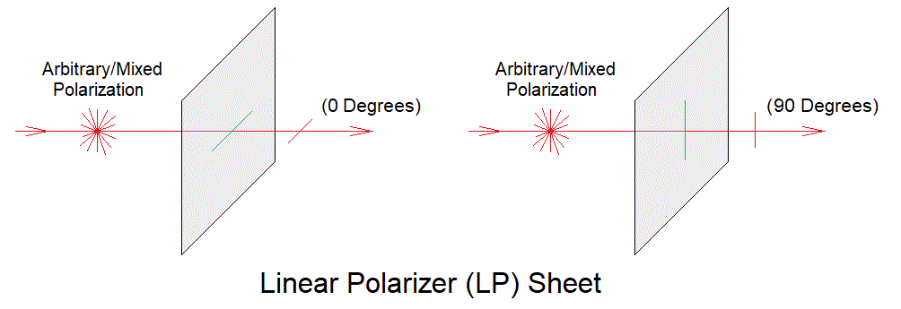
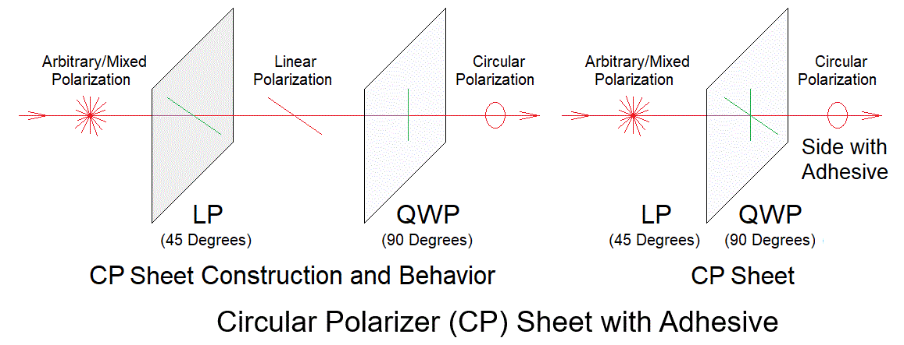
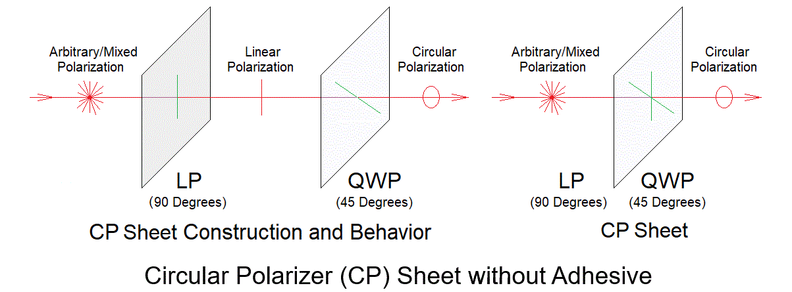

Copyright © 1994-2026
Sam Goldwasser
--- All Rights Reserved ---
There are up to 5 types of polarizing sheets that may be included. Sorry. ;-) All are light gray and look the same upon casual inspection. They are useful over most or all of the VIS wavelength range though most of the applications relevant here use a red HeNe laser at 633 nm.
Note that for most applications where the output goes directly to a photodiode, pieces of one of the CP sheets are the only type needed since they can act as an LP or QWP for the input.
The polarization orientation is parallel to one of the edges.


The LP is oriented at 0/90 degrees (parallel to one of the edges and the QWP optical axes are at ±45 degrees.

The difference between RCP and LCP is in the relationship of the LP to QWP orientation (±45 degrees) and will probably be irrelevant except for the advanced course. ;-)
These sheet polarizers can be cut into any desired size with a pair of scissors. For use with a typical photodiode, 5x5 mm or even less is large enough. And the piece can be glued directly to the face of the photodiode. An adhesive like 5-minute Epoxy can be used where one of these without adhesive needs to be stuck to something as well as to coat the adhesive-side to protect it. Epoxy is non-birefringent.
Note that because they are both sandwiches, in principle it may be possible to separate them to obtain LP and QWP sheets. However, that adhesive is tough and the result may not be useful.
For our purposes, the CP sheet can be used in several ways. Here are 2 of them:
These create a so-called Type III Quad-Sin-Cos detector and is probably the simplest configuration..
For the CP with adhesive, these orientations are automatic when a piece is cut lined up with an edge. For the CP without adhesive, it must be rotated 45 degrees in both cases.
There is a thin transparent protective film covering both sides of the LP and CP sheets. The film must be removed on either side where the polarization matters as it is highly birefringent. One side of the sheet may have an adhesive backing. The protective film can be left in place on that side if the polarization doesn't matter, as where the beam goes directly to a photodiode. Or in that case it can be removed and the LP or CP sheet can be stuck directly to the photodiode. Or it can be stuck to something that is NOT birefringent like a glass window or microscope cover slip. However, if the protective film is removed from the sticky-side without replacing it with something, dust may collect there.
To confirm if a specific sheet is LP or CP if not marked, temporarily remove the protective film from both sides. Then rotate a known LP in front of it or pass the beam from a linearly polarized laser through it. The transmitted intensity will be fairly constant for the CP-side of the CP sheet regardless of relative orientation, but will go to nearly zero for the LP when the polarization axes are orthogonal.
If you are totally confused by now, feel free to contact me at the link above. But this stuff is confusing even for experienced laser jocks. ;-)
-- end V1.10 --